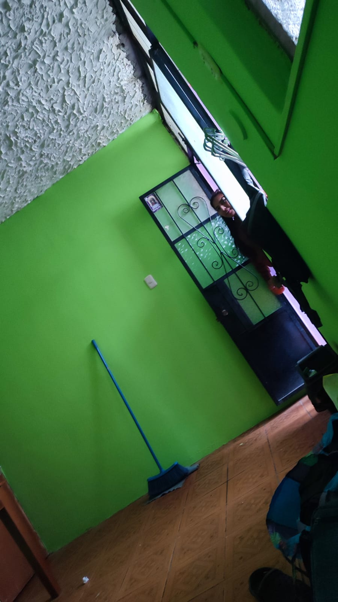
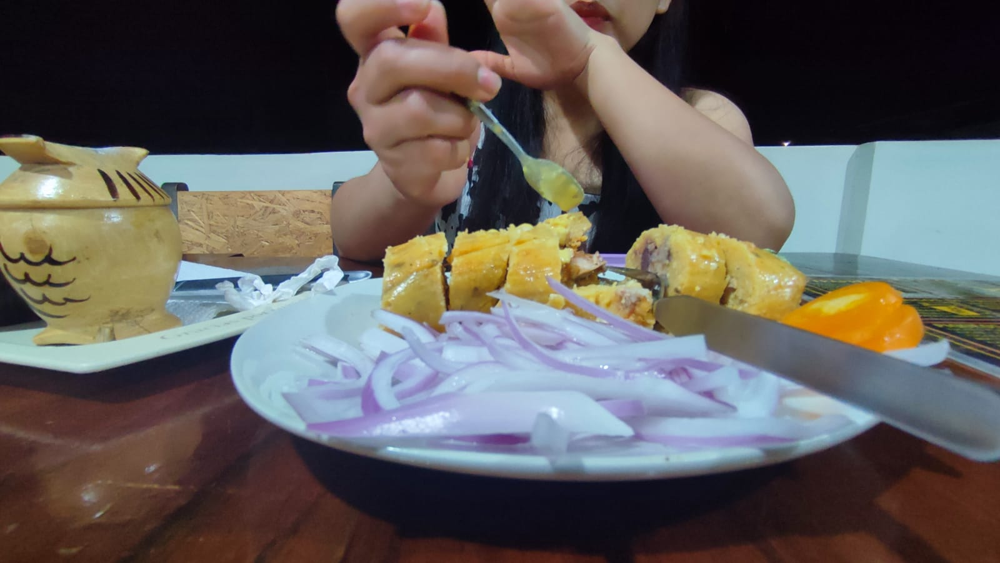
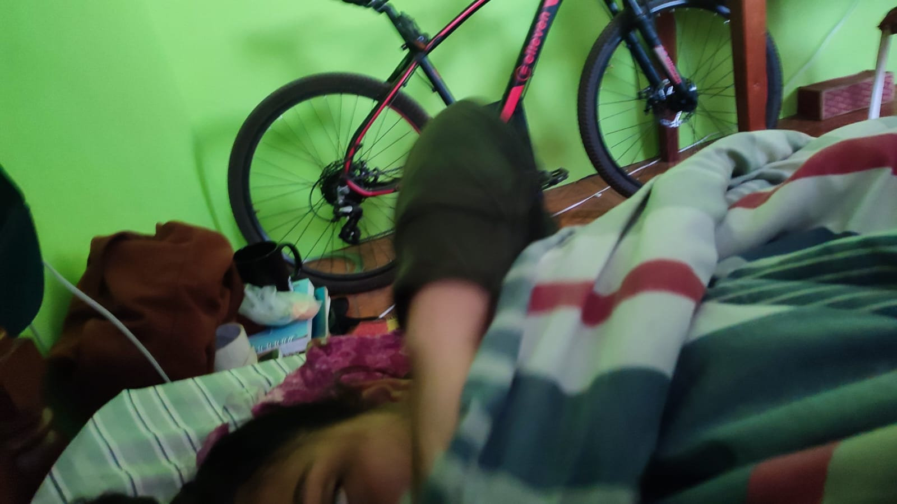
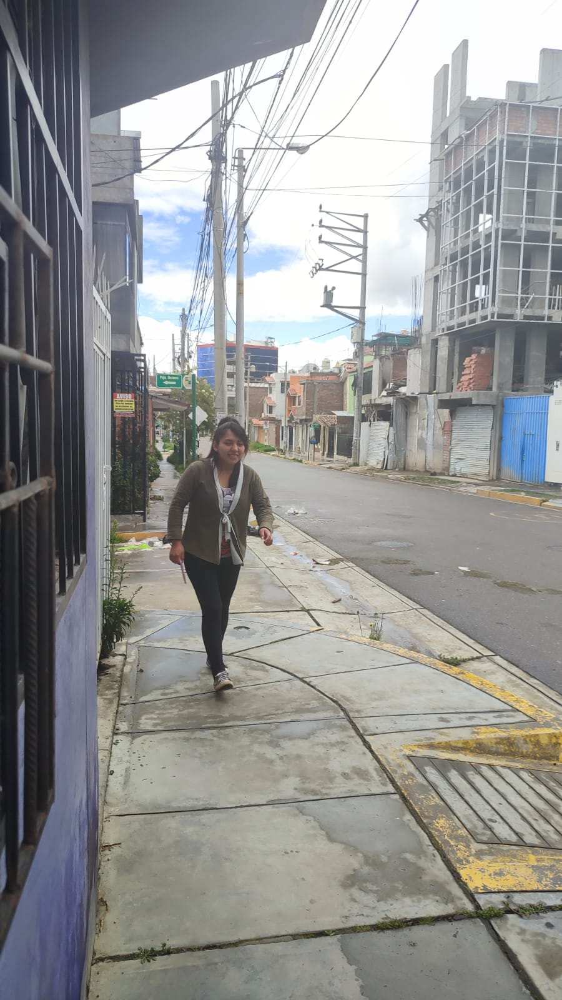

❤️Feliz Día Darssy mi amor❤️
❤️❤️Te quiero más cada día y estoy agradecido por tenerte a mi lado❤️❤️
Canciones que te gustan y a mi no :/
Selecciona una canción
Karen Méndez - Tu Turno
Vuelve - Karen Méndez
Karen Méndez - Culpables
A Ella - Karol G
Karen Méndez - Si algún día me toca a mí
Shakira - Acróstico
Francely Abreuu - Neverland
Calma - Pedro Capó, Farruko Remix
Karen Méndez - No Dura
HA-ASH - Ex de Verdad
Lo Siento - Karen Méndez
Maite Perroni - "Vas A Querer Volver"
Abraham Mateo, Sofía Reyes - ¿Qué Ha Pasao'?
Morat - No Se Va
Reproducir
❤️❤️❤️ Recuerdos ❤️❤️❤️
   